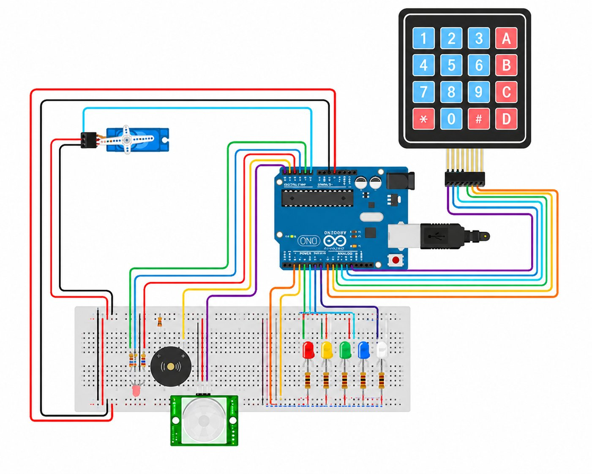
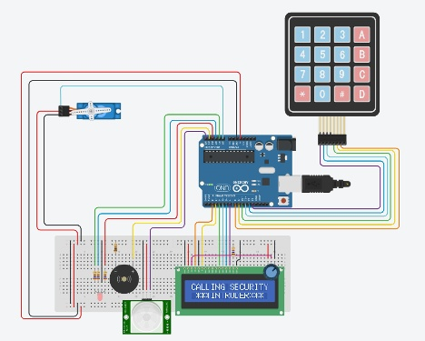

Course: TECH 117 (Computer Engineering Technology, Fall 2025)
Instructor: Ph.D. Ana Rodrigues
Team Members:
The objective of this project is to design and program an Arduino Uno-based Home Security System that provides an affordable and reliable solution for protecting residential properties from unauthorized access and security threats. Home security is an important concern for many households, as break-ins and unauthorized entry can result in financial loss and reduced personal safety. This project was chosen because it demonstrates how low-cost embedded technologies can be used to address a real-world problem while improving home security.
The system integrates a keypad, Grove servo motor (EMAX 9g ES08A Mini Servo), PIR motion sensor, LCD, RGB LED, and piezo buzzer. The keypad and servo motor provide password-protected access control, while the PIR sensor monitors the surrounding area for movement. When unauthorized motion is detected, the RGB LED and buzzer provide visual and audible alerts to notify occupants of potential security risks.
This project demonstrates how sensors, actuators, and microcontroller technologies can be combined to create a practical and cost-effective security solution. It also supports the United Nations Sustainable Development Goals (SDGs) by contributing to SDG 11 (Sustainable Cities and Communities) through safer residential environments, SDG 9 (Industry, Innovation and Infrastructure) through affordable technological innovation, and SDG 16 (Peace, Justice and Strong Institutions) by enhancing safety and protection against unauthorized access.
Overall, the project highlights the role of automation, electronics, and programming in solving real-world security challenges while promoting safer communities and accessible technological innovation.
This project is an automated, low-cost residential security gatekeeper that uses an Arduino Uno to process inputs from a keypad and a PIR motion sensor to control a servo motor, an LCD display, an RGB LED, and a piezo buzzer. The system secures a property by authenticating users via a keypad password, monitoring the environment for unauthorized human presence, and detecting threats using audiovisual alarms.
Real-time feedback—such as "System Armed", "Access Granted", and "Motion Detected"—is continuously updated on the LCD screen to keep residents informed of the system's status.
The system's main capabilities include four key functions: Password-Protected Access Control, which uses a keypad and a Grove Servo Motor to prevent unauthorized physical entry by requiring a valid passcode before unlocking the door mechanism. Intrusion & Motion Detection utilizes a PIR Motion Sensor to detect movement and thermal changes in the environment to identify potential intruders. Immediate Threat Alerting uses an RGB LED and piezo buzzer to provide visual and audible warnings that deter intruders and notify nearby occupants.
Finally, User Interface & Status Feedback uses an LCD screen to display system information and operating status in real time, helping users understand system conditions.
The project will be evaluated on its functional reliability, accuracy, and robustness across three core goals: ensuring reliable access control authentication by correctly verifying passcodes to trigger the servo motor and LCD status; maintaining responsive motion detection and intrusion alerting through the PIR sensor, RGB LED, and piezo buzzer to minimize false positives; and achieving system stability and low-cost integration by running continuously on an Arduino Uno without unexpected crashes.
Arduino Uno-based home security system
integrated with a 4×4 keypad, PIR motion sensor, servo motor, buzzer, and LED display.
The system detects motion, allows keypad-based security control,
and displays security status and alerts on the LED screen.

Phase 2 with LCD Display

| Item | Qty | Unit Price | Subtotal | Source |
|---|---|---|---|---|
| Arduino Uno Rev3 | 1 | $27.60 | $27.60 | Arduino Store |
| HC-SR04 Ultrasonic Sensor | 1 | $3.95 | $3.95 | Adafruit |
| Passive Buzzer | 1 | $0.95 | $0.95 | SparkFun |
| LEDs (Red, Yellow, Green) | 3 | $0.20 | $0.60 | Adafruit |
| 220 Ω Resistors | 3 | $0.03 | $0.09 | Adafruit |
| Breadboard | 1 | $4.95 | $4.95 | Adafruit |
| Jumper Wires | 1 set | $3.50 | $3.50 | SparkFun |
| Estimated Total | $41.64 | — | ||
The following image shows the assembled prototype on a breadboard.

The following Arduino code controls the system, lighting LEDs and activating the buzzer based on distance readings from the HC-SR04 sensor.
// Collision Warning System with Distance Sensor (HC-SR04)
// Author: Ana Rodrigues
// Oct 2, 2025
// Object is farther than 50cm: Green LED lights up
// Object is closer than 50 cm, but more than 10cm away: Yellow LED lights, buzzer plays 300Hz tone
// Object is closer than 10cm: Red LED lights up, buzzer plays 500Hz tone
//LED pins
const int greenLED = 2;
const int yellowLED = 3;
const int redLED = 4;
// Ultrasonic sensor pins
const int trigPin = 9;
const int echoPin = 10;
// Passive buzzer pin
const int buzzer = 11;
void setup() {
pinMode(greenLED, OUTPUT);
pinMode(yellowLED, OUTPUT);
pinMode(redLED, OUTPUT);
pinMode(trigPin, OUTPUT);
pinMode(echoPin, INPUT);
Serial.begin(9600);
}
void loop() {
// Measure distance
digitalWrite(trigPin, LOW);
delayMicroseconds(2);
digitalWrite(trigPin, HIGH);
delayMicroseconds(10);
digitalWrite(trigPin, LOW);
long duration = pulseIn(echoPin, HIGH);
long distance = duration * 0.034 / 2;
Serial.print("Distance: ");
Serial.print(distance);
Serial.println(" cm");
//Error in measurement:
if (distance <= 0)
return;
//Too close:
if (distance <= 10) {
digitalWrite(greenLED, LOW);
digitalWrite(yellowLED, LOW);
digitalWrite(redLED, HIGH);
tone(buzzer, 500); // Play 500Hz tone
return;
}
//Midrange:
if (distance <= 30) {
digitalWrite(greenLED, LOW);
digitalWrite(yellowLED, HIGH);
digitalWrite(redLED, LOW);
tone(buzzer, 300); // Play 300Hz tone
return;
}
//Normal status:
digitalWrite(greenLED, HIGH);
digitalWrite(yellowLED, LOW);
digitalWrite(redLED, LOW);
noTone(buzzer); // stop buzzer
delay(100);
}
The system Arduino Uno with a keypad, PIR motion sensor, servo motor, LEDs, and a buzzer to build an interactive, password-protected security system. By combining user authentication with real-time motion detection and audio-visual indicators, the project demonstrates an effective and scalable microcontroller-based access control solution